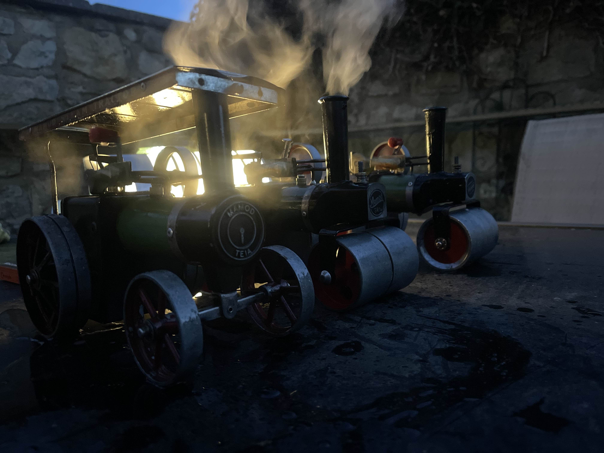
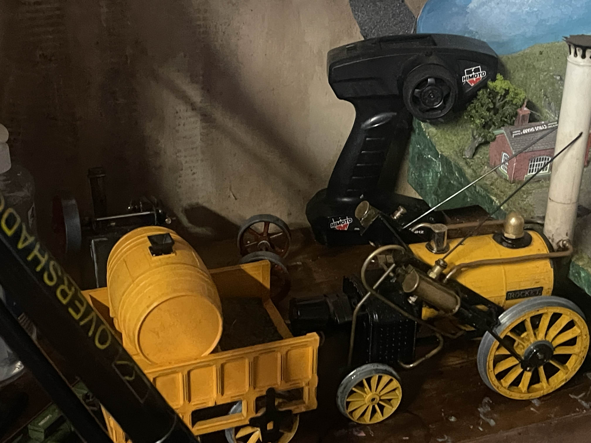
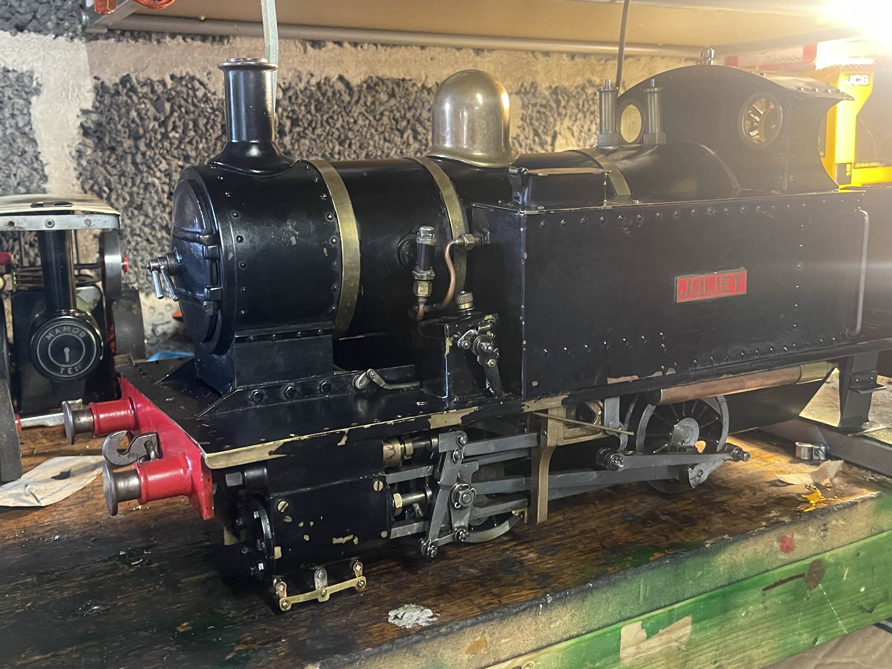
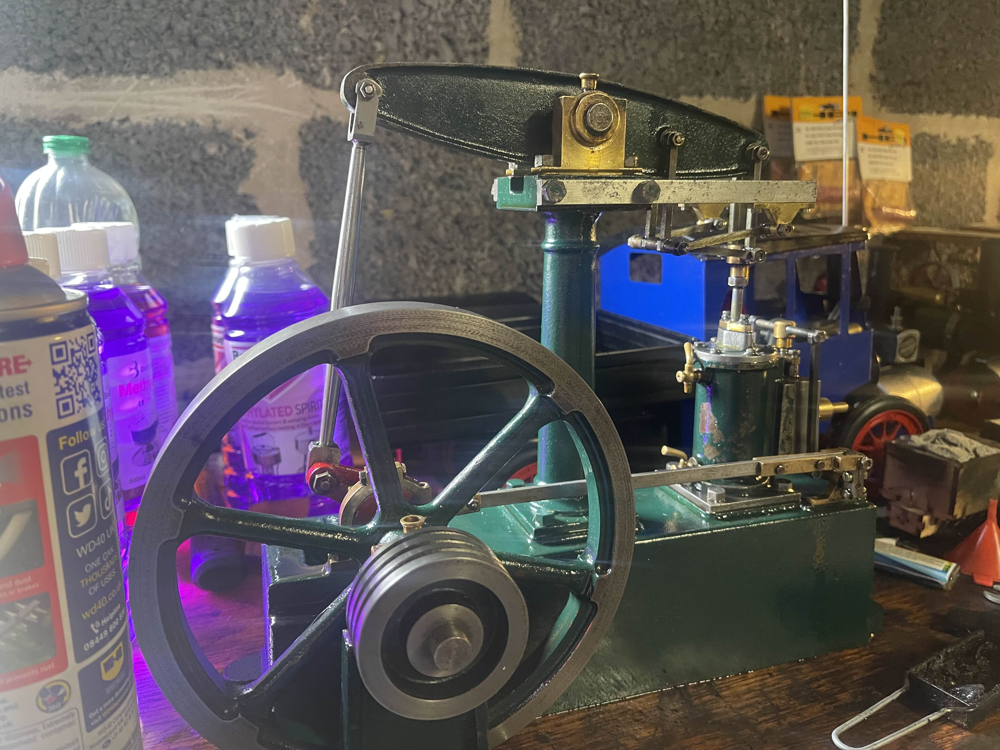

So this is the hobby that takes up most of my time, repairing and fitting steam engines.
I spend alot of time fixing these engines of my own, as well as volunteering at Markham Grange Steam Museum and the North Yorkshire Moors Railway.

Here are 3 mamods in steam, the most I've had running at one time. Fuel is expensive. The steam roller furthest away, I restored within an hour, the postman dropped it off and I had to restore it within 90 mins before we set off to a steam rally.

This is my 3.5" gauge Hornby Live steam "Rocket", got this for 300 quid in 2022. This was really my first look at bigger gauges, horrible horrible design. No regulator, just a flame control BUT if they had a bigger boiler it would proove very unafective so they used a smaller boiler meaning that the smaller fire adjustments impacted the pressure massively. However, you only get a 3 minute run time since it holds 1.5x less. Stupid.

Here is my 3.5" Gauge Juliet Class Live steam locomotive, this engine is a recent purchase as of 06/07/2025. It is classed as a running restoration, it requires new boiler certification which means that the boilers saftey test requires renewal. Without this test I cannot run the engine in public as there is no insurance on its condition. The motion work is no where near as bad as advertised, however in reverse it is a bit lumpy but Im optomistic that it will clear out on steam.

Here is a Stuart Models Beam Engine, I got this of a mate. He posted it in a group chat that I rarely check and he had tagged me in a post asking if it was of any interest before it goes in the scrap, and I agreed and went up to Carlisle to collect it, some of the parts are made a bit poorly. However I managed to coax it into life on compressed air, and did a steam test at Markham Grange steam museum (the first time theyve had steam in 4 years). It was good to see it run. The steam chest cover and chest studs are drilled and tapped in the wrong place, so the cover and chest are on a wonk. When I took the cover off to adjust the postion of the die block on the valve stem, the builder used a Vauxhall parts recipt as a gasket and instead of cutting the inside of the gasked out he just punched a hole for the steam to come in.